扉页
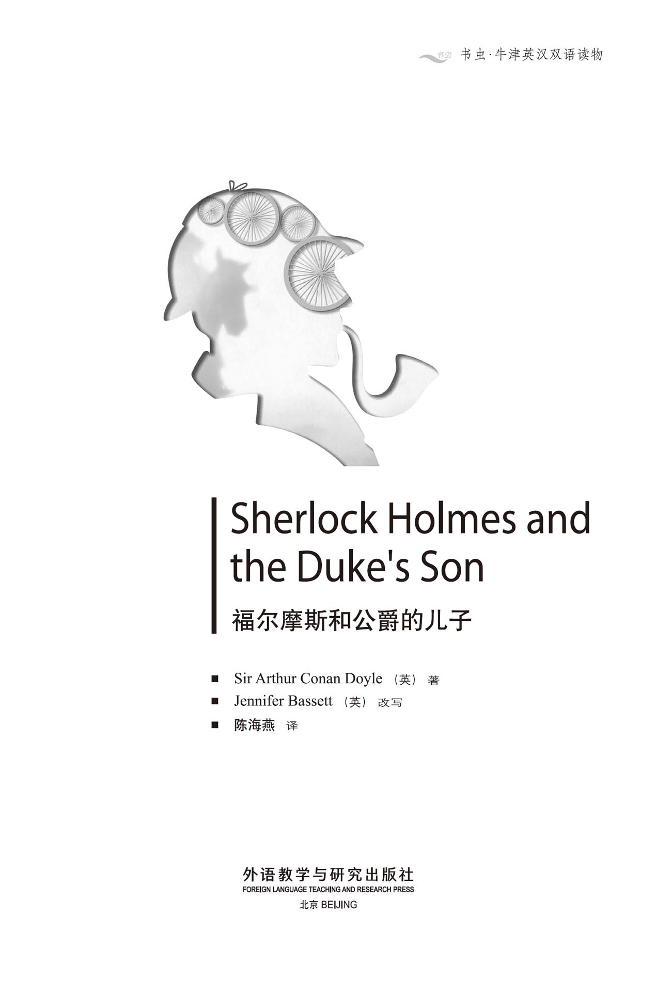
版权页
京权图字：01-2002-6586
Originally published by Oxford University Press, Great Clarendon Street, Oxford. © 2002
This edition is licensed for sale in the People's Republic of China only and not for export therefrom.
'Oxford' is a registered trademark of Oxford University Press.
只限中华人民共和国境内销售，不包括香港特别行政区、澳门特别行政区及台湾省。
不得出口。
图书在版编目（CIP）数据
福尔摩斯和公爵的儿子：英汉对照／（英）柯南道尔（Conan Doyle，A. ）著；（英）巴西特（Bassett，J. ）改写；陈海燕译．— 北京：外语教学与研究出版社，2003.9（2014.12 重印）
（书虫·牛津英汉双语读物）
书名原文：Sherlock Holmes and the Duke's Son
ISBN 978-7-5600-3648-9
Ⅰ．福… Ⅱ．①柯… ②巴… ③陈… Ⅲ．英语—对照读物，小说—英、汉 Ⅳ．H319.4:Ⅰ
中国版本图书馆CIP数据核字（2003）第070419号
出版人： 蔡剑峰
责任编辑：易 璐
封面设计：孙莉明
出版发行：外语教学与研究出版社
社 址：北京市西三环北路19号（100089）
网 址：http://www.fltrp.com
版 次：2003年9月第1版
书 号：ISBN 978-7-5600-3648-9
* * *
凡侵权、盗版书籍线索，请联系我社法律事务部
举报电话：（010）88817519 电子邮箱：banquan@fltrp.com
法律顾问：立方律师事务所 刘旭东律师
中咨律师事务所 殷 斌律师
内容简介
内容简介
是不是所有的自行车轮胎都一样？有多少种不同的自行车轮胎？当有人骑过松软潮湿的地面，轮胎会在地面上留下车辙——但是有一只轮胎会留下更深的车辙。这是前轮的轮胎还是后轮的轮胎？
当公爵的儿子被从赫克斯特伯博士的学校绑架的时候，了解这些问题的答案意义重大。歇洛克·福尔摩斯和他的老朋友华生大夫花了数小时查看低峡谷沼泽里的泥土。他们发现了自行车轮胎的车辙、羊和牛的蹄印——他们还发现了一具尸体。现在有了更多的问题，而且华生大夫认为不可能找到答案。“得啦，得啦，华生，”福尔摩斯说，“每个秘密都有它的答案。”
但是甚至连歇洛克·福尔摩斯对这起神秘事件的答案也大感意外……
SHERLOCK HOLMES AND THE DUKE'S SON
SHERLOCK HOLMES
AND THE DUKE'S SON
Are all bicycle tyres the same? How many different kinds of bicycle tyre are there? When someone cycles over soft wet ground, the tyres leave tracks on the ground—but one tyre makes a deeper track. Is it the tyre on the front wheel or the back wheel?
When the Duke's son is kidnapped from Dr Huxtable's school, it is important to know the answers to questions like these. Sherlock Holmes, and his old friend Dr Watson, spend many hours looking at the mud on Lower Gill Moor. They find the tracks of bicycle tyres, the tracks of sheep and of cows—and they also find a body. Now there are even more questions, and Dr Watson thinks it is not possible to find the answers. 'Come, come, Watson,' says Holmes. 'Every mystery has an answer.'
But even Sherlock Holmes is surprised by the answer to this mystery...
目录
1. Sherlock Holmes has a visitor
1
Sherlock Holmes has a visitor
When visitors came to see Sherlock Holmes in Baker Street, they often did surprising things. Sometimes they put their heads in their hands and cried. Sometimes they talked and talked, and couldn't stop. And sometimes they just sat there and didn't say a word. But nobody was more surprising than Dr Thorneycroft Huxtable.
He was a large man, tall, well-dressed, and important-looking. He came into the room, walked to one of the big chairs, and suddenly fell into it. He sat there, with his eyes closed, looking white and ill.
I ran to get some water for him. Then I got my doctor's bag, and looked at him carefully.
'What is it, Watson? ' said Holmes.
'He's all right, I think,' I said. 'He's just very, very tired—and probably hungry too.'
Holmes looked in the man's pockets—and found a train ticket from Mackleton, in the north of England.
'Mackleton—that's a long way,' said Holmes. 'It's not twelve o'clock yet, so he probably left home before five o'clock this morning.'
After a minute or two the man began to move, and his eyes opened. A second later he got quickly to his feet. His face was now red and unhappy.
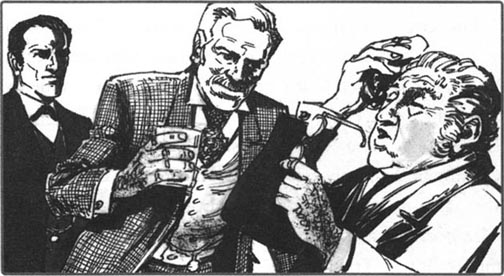
'Mr Holmes, I am so sorry! I forgot to eat or drink anything this morning—that's why I felt ill.'
'When you feel better—' I began.
'I'm better now, thank you,' said our visitor. 'And I want very much to talk to Mr Holmes—to ask him something. Please, Mr Holmes, come back to Mackleton with me by the next train.'
'I'm sorry, that's not possible,' said Holmes. 'I'm working on two important cases—the Ferrers case and the Abergavenny case. I cannot leave London at the moment.'
'Important cases!' our visitor cried. 'But this case is very important too. You know about the kidnapping of the son of the Duke of Holdernesse three days ago...'
'What! The Government Minister?'
'Yes, that's him. So you didn't know... It's not in the newspapers yet, that's true. But Sherlock Holmes always hears news before other people, I thought.'
Holmes went to get one of his books, and began to read the page about the Duke of Holdernesse.
'Holdernesse, sixth Duke. Wife: Edith, daughter of Lord Grey. One child, Lord Arthur Saltire. Houses in London, Lancashire, and Wales. Government Minister for this...for that...for the other... Well, well,' said Holmes. 'He's one of the greatest men in the country.'
'One of the greatest, and one of the richest,' said Dr Huxtable. 'I know, Mr Holmes, that you don't work for money, but I must tell you this. The Duke is offering five thousand pounds for news of his son, and another one thousand pounds for the name of his kidnapper.'
'That,' said Holmes, 'is a most interesting offer.' He looked at me. 'Watson, I think we are going with Dr Huxtable back to the north of England this afternoon.'
Holmes then looked at Dr Huxtable. 'Now, sir, tell me everything. What happened? When did it happen? How did it happen? And why does Dr Thorneycroft Huxtable come to ask for my help three days later?'
Our visitor drank some water, and began his story.
surprising adj. causing surprise. 令人惊奇的，出人意外的。
well-dressed adj. clothe oneself up in a good, right manner. 穿着考究的。
important-looking adj. (of a person) having great influence or authority. 气宇轩昂的，像重要人物的。
probably adv. almost certainly. 可能。
case n. matter that is being officially investigated, esp. by the police. 案件。
kidnap v. steal sb. away by force and illegally, esp. in order to obtain money or other demands．绑架。
government n. body of persons governing a state. 政府。
minister n. person at the head of a government department or a main branch of one (and often a member of the) Cabinet. 部长，大臣。
offer v. present. 提供。
pound n. unit of British money. 英镑。
有客人拜访歇洛克·福尔摩斯
1．有客人拜访歇洛克·福尔摩斯
当客人们来到贝克大街找歇洛克·福尔摩斯的时候，他们的举止经常是怪异的。他们有时抱着头痛哭，有时滔滔不绝地说个不停，有时只是一言不发地坐着。但是没有人比桑尼克罗夫特·赫克斯特伯博士的举止更怪异了。
他又高又胖，衣着考究，气宇轩昂。他走进房间，朝其中一把大椅子走去，突然瘫倒在椅子里。他坐在那里，双目紧闭，脸色苍白，像生病了一样。
我连忙跑去为他倒水。然后我拿来医药包，仔细地给他作检查。
“怎么回事，华生？”福尔摩斯说。
“我觉得他没事，”我说，“他只是非常非常疲劳——而且也可能是饿了。”
福尔摩斯检查了那男人的口袋——发现了一张从英国北部城市麦克尔顿出发的火车票。
“麦克尔顿——那个地方很远，”福尔摩斯说，“现在还不到12点，所以他可能是在今天凌晨5点之前离开家的。”
过了一两分钟，这个男人动了动，并且睁开了眼睛。一秒钟之后他迅速地站了起来。此刻，他的脸色变红了，露出一丝悲伤的神情。
“福尔摩斯先生，非常抱歉！今天早上我忘记吃点儿或喝点儿什么了——所以我感到不舒服。”
“等你感觉好些的时候——”我说。
“现在我好多了，谢谢，”这位来访者说，“我非常想和福尔摩斯先生谈谈——想问他一些事情。求你了，福尔摩斯先生，跟我坐下一趟火车回麦克尔顿。”
“对不起，那不可能，”福尔摩斯说，“我正在处理两桩重大的案件——费勒案和阿伯加文尼案，这个时候我不能离开伦敦。”
“重大案件！”我们的客人喊道，“但是这个案子也很重大。要知道三天前霍尔德内斯公爵的儿子被绑架了……”
“什么！那个内阁部长吗？”
“是的，就是他。这么说你不知道……到目前为止报纸上确实还没刊登此消息。但是我以为歇洛克·福尔摩斯总是比别人消息灵通的。”
福尔摩斯走过去从他的一堆书里拿出了一本，开始读介绍霍尔德内斯公爵的那一页。
“霍尔德内斯，第六世公爵。夫人：伊迪丝，格雷勋爵的女儿。有一个独生子，阿瑟·索尔特勋爵。在伦敦、兰开夏和威尔士都有房产。负责这个……，那个……等等……的内阁部长，啊，啊，”福尔摩斯说，“他是这个国家地位最显赫的人物之一。”
“最显赫，也是最富有的人之一，”赫克斯特伯博士说，“福尔摩斯先生，我知道你并不是为了钱工作，但是我必须告诉你这一点。公爵开价5,000英镑，奖励提供他儿子的消息的人，开价1,000英镑，奖励提供绑架者名字的人。”
“那个，”福尔摩斯说，“是非常吸引人的开价。”他看着我，“华生，我想今天下午我们要和赫克斯特伯博士一起回英国的北部去。”
然后，福尔摩斯看着赫克斯特伯博士。“先生，现在告诉我一切。发生了什么事？什么时候发生的？怎么发生的？为什么桑尼克罗夫特·赫克斯特伯博士三天之后才来寻求我的帮助？”
我们的客人喝了几口水，开始述说他的故事。
2. Dr Huxtable's story
2
Dr Huxtable's story
'My school—the Priory School near Mackleton—is the best school for young boys in England,' began Dr Huxtable. 'We have the sons of Lord Soames, Lord Lever, and of many other important people. Three weeks ago Mr James Wilder, the Duke of Holdernesse's secretary, came to see me. The Duke, he said, wanted to send his son, the ten-year-old Lord Saltire, to my school.
'On the 1st of May young Lord Saltire arrived. He's a nice boy, and he soon began to like school life and to make friends. His life at home, you see, was not very happy—we all know about the Duke and his wife. The Duchess, of course, now lives in the south of France. She left the Duke about three months ago, I think. But the boy loved his mother, and was very unhappy when she left. Because of this, the Duke sent him to my school. And after two weeks with us, he was much happier.
'Then, on the night of the 13th of May, he disappeared. The way to his bedroom is through another, larger room. Two older boys sleep there. One of them never sleeps very well, and he heard and saw nothing that night. So young Arthur did not go out through that room. His window was open, and there is ivy all up the wall of the house. It is easy to get out of the window and down the ivy to the ground. So we think that he went out that way.
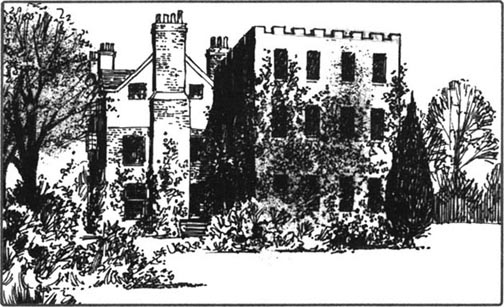
'He was in his usual school things, we think—a short black coat and dark blue trousers. We looked all through his room very carefully, but we found nothing strange, nothing unusual.
'When I learnt the news at seven o'clock on Tuesday morning, I called everybody into the big schoolroom. Then we learnt more bad news—Heidegger, the German teacher, was missing too. His room is not far from Arthur's room. Heidegger went down the ivy—we know this because we found his footprints on the ground under the window. We know, too, that he was only in his coat, trousers, and shoes, because we found his shirt and his socks on the floor of his room. And he took his bicycle with him.
'Heidegger came to the school a year ago. He's a good teacher, but the boys don't like him because he isn't very friendly.
'So, Mr Holmes, we have two missing people. It's now Thursday, and there's still no news of them.'
Holmes took out a little notebook, and began to write things down.
'The boy didn't go home, of course,' he said.
'No, no. We asked at Holdernesse Hall at once,' said Dr Huxtable. 'The Duke is very afraid for his son—and I am the unhappiest man in England. Mr Holmes, you are a famous detective—please help me!'
'You make things very difficult for me,' Holmes said. 'How can I find marks in the ivy or on the ground after three days? Why didn't you come to me at once?'
'Because of the Duke,' Dr Huxtable said. 'He doesn't like people talking about his unhappy family life.'
'And what are the police doing?'
'Well, they heard about a boy and a young man at the station early on Tuesday. They looked for them, and last night they found them in Liverpool—but it was a man and his son going to visit a friend. We lost three days because of that. And last night I couldn't sleep, so I took the first train down to London this morning.'
'Well, Dr Huxtable, some more questions,' said Holmes. 'Did the boy take German lessons?'
'No.'
'So he didn't know the German teacher well, then.'
'He probably never spoke to him,' said Dr Huxtable.
'Mmm,' said Holmes. 'Does the boy have a bicycle?'
'No.'
'Was any other bicycle missing?'
'No.'
'So. Did the German teacher ride away on his bicycle in the night, with the boy on his back? I don't think so. But what happened to the bicycle? Now, what about visitors? Did the boy have any visitors the day before?'
'No.'
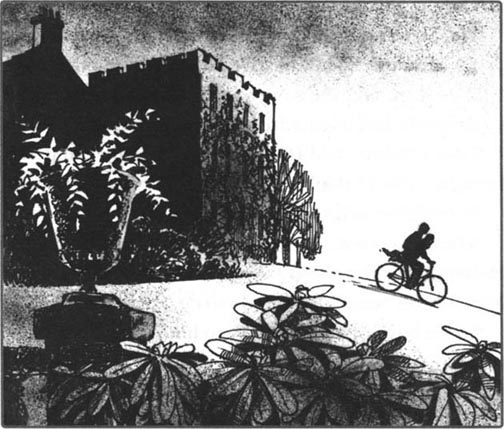
'Did he get any letters?'
'Yes, one letter. From his father.'
'Do you open the boys' letters, Dr Huxtable?'
'No.'
'Then how do you know that the letter was from the father?'
'I know the Duke's handwriting. And he says that he wrote a letter to his son.'
'Did the boy get any letters from France?'
'No, I never saw any.'
'Do you understand me, Dr Huxtable?' Holmes said. 'Did someone take the boy away, or did the boy go freely? —because he had a letter from France perhaps.'
'I don't know,' said Dr Huxtable. 'He only had letters from his father, I think.'
'Were father and son very friendly?'
'The Duke is not... er... not a very friendly man, Mr Holmes. He's not a bad father, but he is a Government Minister and has a lot of things to do.'
'So the boy felt more friendly to his mother?'
'Yes.'
'Did he say that?'
'No.'
'Did the Duke tell you, then?'
'Oh no ! The Duke never talks about things like that.'
'So how do you know?'
'Mr James Wilder, the Duke's secretary, told me.'
'I see,' said Holmes. 'That last letter of the Duke's—where is it now?'
'The boy took it with him,' Dr Huxtable said. 'It's not in his room. Mr Holmes—our train leaves in half an hour.'
'Right,' said Holmes. He looked at me. 'Watson, let's get ready and go off to the north with Dr Huxtable. Perhaps we can find some answers to this mystery.'
secretary n. employee in an office, usu. working for another person, dealing with letters, typing, filing, etc. and making appointments and arrangements. 秘书。
disappear v. no longer be visible; vanish. 消失，不见。
ivy n. any of various types of climbing evergreen plant, esp. one with dark shiny five-pointed leaves. 常青藤。
ground n. solid surface of the earth. 地面。
strange adj. not previously known, seen, felt, heard of, etc. not familiar or of one's own. 陌生的；生疏的；不熟悉的。
unusual adj. rare or exceptional. 不寻常的；奇异的。
detective n. person, esp. police officer, whose job is to investigate and solve crimes. 侦探。
mark n. stain, spot, line, etc., esp. one that spoils the appearance of sth. 痕迹，污点。
station n. similar place where buses and coaches stop. 车站。
early adv. near to the beginning of a period of time. 早，初。
never adv. at no time, not ever. 从未，未曾。
take...away remove sb. or sth. 拿走，带走。
freely adv. without any obstruction; in an uncontrolled manner. 自由地，不受阻挡地。
see v. perceive (sth.) with the mind, understand. 领会，明白。
mystery n. thing of which the cause or origin is hidden or impossible to explain. 神秘事物，秘密。
赫克斯特伯博士的故事
2．赫克斯特伯博士的故事
“我的学校——麦克尔顿附近的修道院公学——是英国最好的一所男童学校，”赫克斯特伯博士开始说道，“在学校里就读的有索姆斯勋爵、利弗勋爵，以及其他一些重要人物的儿子。三个星期前，霍尔德内斯公爵的秘书詹姆斯·怀尔德先生来见我。他说公爵想送他10岁的儿子索尔特勋爵来我的学校上学。
“5月1日小索尔特勋爵到了。他是个好孩子，而且不久之后就开始喜欢学校生活，并开始交朋友了。你知道，他的家庭生活并不怎么幸福——我们大家对公爵和他夫人的事都有耳闻。当然，公爵夫人现在住在法国南部。我想，她大概是3个月前离开公爵的。但是这个孩子爱他的母亲，她走之后他非常不高兴。因为这个，公爵送他来我的学校。和我们相处了两个星期后，他快活多了。
“然后，在5月13日的晚上，他失踪了。去他的卧室要经过另外一个大一些的房间。两个年龄稍大的孩子睡在那里。其中一个孩子睡觉一向不踏实，那天晚上他没有听到或看到什么，所以说小阿瑟没有经过那个房间出来。他房间的窗户开着，屋外的墙上爬满了常青藤，人很容易就能从那个窗户爬出来，并顺着常青藤下来。因此我们认为他是这么出去的。”
“他穿戴着学校平日的衣物，我们想是——黑色的短外衣和深蓝色的裤子。我们仔细查看了他的房间，但是没有发现一丝异样或不寻常。
“我星期二早上7点听到这个消息时，把所有人都叫到了大教室。然后我们听到了更多的坏消息——德语老师海德格也失踪了。他的房间离阿瑟的不远。海德格是顺着常青藤爬下去的——我们之所以知道这一点是因为我们在窗户下面的地上发现了他的脚印。我们还知道他只穿着外衣、裤子和鞋，因为我们在他房间的地板上发现了他的衬衫和袜子。而且他是骑自行车走的。
“海德格是一年前来到我的学校的。他是个好老师，但是因为他不太和善，孩子们都不喜欢他。
“所以，福尔摩斯先生，我们有两个人失踪了。现在是星期四了，依然没有他们的消息。”
福尔摩斯拿出一个小笔记本，开始在上面记着什么。
“那男孩儿当然没有回家。”他说。
“不，没有。我们当时马上询问了霍尔德内斯府上，”赫克斯特伯博士说，“公爵很为自己的儿子担心——而我是英国最不幸的人了。福尔摩斯先生，你是一个著名的侦探——请帮帮我！”
“你让事情变得对我来说很棘手，”福尔摩斯说，“事情发生三天了，我怎么能够在常青藤和地上发现痕迹呢？你当时为什么不立刻来找我呢？”
“是因为公爵，”赫克斯特伯博士说，“他不喜欢别人谈论他不幸的家庭生活。”
“警察现在在做什么？”
“唉，他们星期二一早听说车站有一个小孩儿和一个年轻人。他们就去寻找这两个人，昨天晚上在利物浦找到了——但他们是一对去看望朋友的父子。为此我们浪费了三天时间。昨天晚上我无法入眠，于是我乘坐今天早上的第一趟火车赶到伦敦。”
“那么，赫克斯特伯博士，再问你几个问题，”福尔摩斯说，“那个男孩儿选修德语课了吗？”
“没有。”
“这么说，他和那个德语老师不怎么熟悉了。”
“他可能从来都没有跟他说过话。”赫克斯特伯博士说。
“嗯，”福尔摩斯说，“那男孩儿有自行车吗？”
“没有。”
“还有其他的自行车丢失吗？”
“没有。”
“嗯。是德语老师那天晚上骑自行车离开，后面带着那个男孩儿吗？我不这么认为。但是那辆自行车怎么了？那么，有客人来访过没有？事发之前有谁来看过那个男孩儿吗？”
“没有。”
“他收到过什么信件没有？”
“是的，有一封。是他父亲写来的。”
“你拆看孩子们的信吗，赫克斯特伯博士？”
“不。”
“那么你怎么知道那封信是他父亲写来的？”
“我认识公爵的笔迹，而且他说他给儿子写了一封信。”
“那男孩儿收到过从法国来的信吗？”
“没有，我从来没有见过。”
“你明白我的意思吗，赫克斯特伯博士？”福尔摩斯说，“是有人把男孩儿带走了，还是男孩儿自己走的？——因为他有可能收到过来自法国的信。”
“我不知道，”赫克斯特伯博士说，“我想他只收到过他父亲的来信。”
“他们父子俩的关系融洽吗？”
“公爵不是……呃……不是一个和善的人，福尔摩斯先生。他是个不错的父亲，但他是内阁部长，有许多事情要做。”
“这么说男孩儿和他母亲的关系更为融洽了？”
“是的。”
“他自己那么说的吗？”
“没有。”
“那么是公爵告诉你的？”
“哦，不！公爵从来不说这种事。”
“那你是怎么知道的？”
“是公爵的秘书詹姆斯·怀尔德先生告诉我的。”
“我明白了，”福尔摩斯说，“公爵的最后一封信——现在在哪里？”
“被那男孩儿带走了，”赫克斯特伯博士说，“信不在他的房间里。福尔摩斯先生——半小时后我们那趟火车就要开了。”
“好的，”福尔摩斯说。他看着我，“华生，我们准备一下，跟赫克斯特伯博士到北部去。也许我们能给这个神秘事件找到一些答案。”
3. Holmes and Watson go north
3
Holmes and Watson go north
It was dark when we arrived at Dr Huxtable's famous school in the northern hills. We went quickly into the building out of the cold, and at once someone ran up with news for Dr Huxtable.
He looked very surprised. 'The Duke is here,' he told us. 'The Duke and Mr Wilder, his secretary, are in my office. Come and meet them.'
The Government Minister was a tall man with a long, thin face. He had red hair, and a great red beard. He looked at us, and did not smile. Next to him stood Mr Wilder, a very young man. He was small, with blue eyes, and a watchful face. He spoke first.
'The Duke is surprised, Dr Huxtable, to see Mr Sherlock Holmes here. He doesn't want people to know about this. You know that, so why didn't you speak to the Duke before you went to London?'
'But we need help,' said Dr Huxtable. 'And I—'
'Well,' said the Duke. 'Mr Holmes is here now, and perhaps he can help us.' He looked at Holmes. 'I'd like you to come and stay at Holdernesse Hall, Mr Holmes.'
'Thank you, sir,' said Holmes. 'But I would like to stay near to the mystery, here at the school. Can I ask you one or two questions, perhaps?'
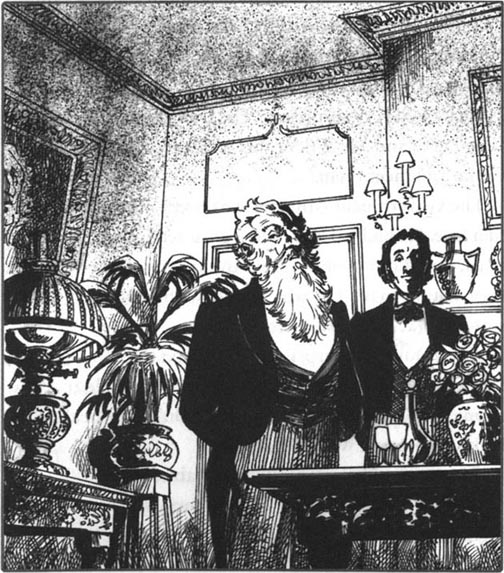
'Of course,' said the Duke.
'My questions are about the Duchess, and about money,' said Holmes.
'The Duchess knows nothing about this,' said the Duke, 'and nobody is asking me for money.'
'I see,' said Holmes. 'You wrote a letter to your son before he disappeared. When did you post it?'
'Post it?' said Mr Wilder angrily. 'The Duke does not post letters. I put the letter into the postbag, with all the other letters that day.'
A minute or two later the Duke and Mr Wilder left. Holmes then began at once to work on the case. We looked carefully all through the boy's bedroom, and the German teacher's room. We looked at the ivy on the wall, and we saw the footprints under the German teacher's window. But we learnt nothing new. Holmes then left the house, and only came back after eleven o'clock.
He had with him a large map. He brought it into my room and put it on the bed.
'This case is beginning to get interesting, Watson,' he said. 'Look at this map. Here is the school, you see, and here is the road. So, did the boy and the teacher go along the road when they left? No, Watson, they did not!'
'How do you know that, Holmes?' I asked.
'Because there was a policeman here—look. He was there from midnight to six in the morning, and he saw nobody on the road. I spoke to him this evening. And here at the other end, you see, is the White Horse Inn. A woman there was ill, and the family watched the road all night, waiting for the doctor. The doctor didn't come until the morning, and the family saw nobody on the road. So the boy and the teacher did not go by road.'
'But, Holmes, what about the bicycle?' I asked.
'Yes, Watson, we must remember the bicycle, of course. But first, let's look to the south and the north. To the south we have a big river—no bicycles there, then. And to the north we have the trees, called Ragged Shaw, and then a great moor, the Lower Gill Moor. And here is Holdernesse Hall, sixteen kilometres from the school by road, but only nine kilometres across the moor. No other houses, until the Green Man Inn, along the Chesterfield road.'
'But the bicycle?' I said again.
'Yes, yes, Watson!' Holmes said. 'It is possible to ride a bicycle across the moor—difficult, but possible.'
Just then Dr Huxtable came quickly into the room. 'News, Mr Holmes!' he said excitedly. 'I bring news!' In his hands was a blue school hat. 'Look—this is the boy's hat. One of my gardeners found it this evening.'
'Where, man, where?' asked Holmes.
'Just north of Ragged Shaw,' said Dr Huxtable.
'Aha!' said Holmes. 'What did I tell you, Watson? Tomorrow we must walk north, across the moor.'
watchful adj. careful to notice things. 注意的，警惕的，戒备的。
ask sb. for sth. request that sb. gives sth. or does sth. 要求某人给某物或做某事。
post v. deliver letters, etc. 邮寄。
the other the remaining (people or things) in a group. 其余的，剩下的（人或事物）。
midnight n. 12 o'clock at night. 午夜，半夜。
inn n. public house or small old hotel where lodgings, drink and meals may be had. 客栈。
until conj. up to the time when. 直到……时（为止）。
moor n. open uncultivated high area of land, esp. one covered with heather. 沼泽地，野地。
kilometre n. metric unit of length; 1000 metres. 公里。
福尔摩斯和华生北上
3．福尔摩斯和华生北上
当我们到达赫克斯特伯博士位于北部山区的著名学校时，天已经黑了。我们快步进入大楼避寒，有人立刻跑过来告诉赫克斯特伯博士一则消息。
他看起来非常惊讶。“公爵在这里，”他告诉我们说，“公爵和他的秘书怀尔德先生在我的办公室。去见见他们吧。”
内阁部长是一个高个子男人，长着一张瘦长的脸。他留着一头红头发，引人注目的胡须也是红色的。他看着我们，没有一丝笑容。年轻的怀尔德先生站在他身边。怀尔德身材瘦小，长着一双蓝眼睛，脸上带着警戒的神色。他首先开口说话。
“赫克斯特伯博士，在这里见到歇洛克·福尔摩斯先生，公爵感到很意外。他不想让任何人知道这件事，你是知道这一点的，那么你去伦敦之前为什么不跟公爵说一声？”
“但是我们需要帮助，”赫克斯特伯博士说，“而且我——”
“嗯，”公爵说，“既然现在福尔摩斯先生来了，他也许能帮我们。”他看着福尔摩斯，“我希望你去住在霍尔德内斯府，福尔摩斯先生。”
“谢谢，先生，”福尔摩斯说，“但是我喜欢住在离谜案更近的地方，就在这所学校。或许我能向您提一两个问题，可以吗？”
“当然可以。”公爵说。
“我的问题是有关公爵夫人和钱的。”福尔摩斯说。
“公爵夫人对此事一无所知，”公爵说，“也没有人向我勒索钱财。”
“我明白，”福尔摩斯说，“在您儿子失踪之前您给他写过一封信。您是什么时候把信寄出去的？”
“寄信？”怀尔德先生生气地说，“公爵从不寄信。是我把信放进邮袋的，和当天其他的信件一起放进去的。”
过了一两分钟之后公爵和怀尔德先生便告辞了。福尔摩斯立即开始着手处理这个案子。我们仔细检查了孩子的卧室和德语老师的房间，还查看了墙上的常青藤和德语老师窗户下的脚印，但是没有发现新线索。然后福尔摩斯离开了房间，11点之后才回来。
他带回来一张大地图。他把地图带到我的房间，铺在床上。
“这个案子开始变得有趣了，华生，”他说，“看看这张地图。这里是学校，你看，这里是路。那么，那男孩儿和老师离开的时候是沿着路走的吗？不，华生，他们没有！”
“你是怎么知道的，福尔摩斯？”我问道。
“因为这里有个警察——看。从午夜到早上6点他一直在那里，他没看到路上有人。今天晚上我跟他谈过了。这里，在另外一端，你看，是白马旅店。那里有一个女人病了，这家人整夜守望着这条路，等待医生的到来。医生早晨才来，这家人没看到路上有人经过。因此，那男孩儿和老师没有从路上走。”
“但是，福尔摩斯，那自行车呢？”我问。
“是的，华生，我们当然必须记着那辆自行车。但是首先，让我们先往南看再往北看。南面有一条大河——那里没有自行车。往北都是树，叫杂木林，接着是一大片沼泽，叫低峡谷沼泽。这里是霍尔德内斯府，从学校沿着大路过去有16公里，但是从沼泽地穿过去只有9公里。中途没有别的房子，只有切斯特菲尔德路边的林中人客栈。”
“但是那辆自行车呢？”我又说。
“是的，是的，华生！”福尔摩斯说，“骑自行车穿过沼泽地是很有可能的——很难，但是有这种可能性。”
就在这个时候，赫克斯特伯博士匆匆进来了。“福尔摩斯先生，有消息！”他激动地说，“我带来了消息！”他的手里拿着一顶蓝色的校帽，“看——这是那男孩儿的帽子。我的一个园丁今天晚上发现的。”
“在哪里，嗨，在哪里？”福尔摩斯问。
“就在杂木林北面。”赫克斯特伯说。
“啊哈！”福尔摩斯说，“我刚才跟你说什么来着，华生？明天我们必须往北面走，穿过沼泽地。”
4. The body on the moor
4
The body on the moor
Very early the next morning I opened my eyes, and saw Holmes next to my bed. He was already dressed.
'Come, Watson,' he cried. 'There is hot coffee ready for you. We leave in ten minutes.'
By six o'clock we were through Ragged Shaw, and half an hour later we were on Lower Gill Moor. Across the middle of the moor was a small river, and the ground all around it was very wet.
'We can easily see tracks in this wet ground,' said Holmes. 'Look carefully, Watson!'
We moved slowly across the moor, looking at every centimetre of mud. We found hundreds of sheep tracks, and once some cow tracks—but no bicycle tracks. And then at last, we found something. Not far from the little river, right across some nice black mud, was the track of a bicycle.
'Hurrah!' I cried. 'We have it.'
But Holmes did not look happy. 'It's a bicycle, yes, but not the bicycle. Every bicycle has different tyres—I know forty-two different kinds of tyre. This tyre is a Dunlop, but Heidegger's bicycle had Palmer tyres. The English teacher told me that. So this is not Heidegger.'
'Is it the boy, then?' I asked.
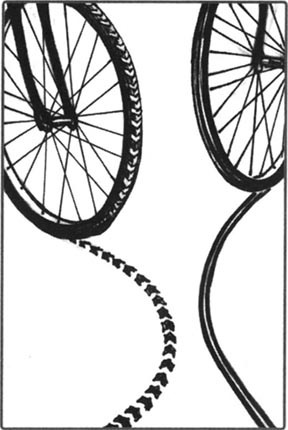
'Probably not. The boy didn't take a bicycle with him,' said Holmes. He looked again at the track in the mud. 'This track is going away from the school.'
'Or perhaps to the school?' I said.
'No, no, my dear Watson. Look at the tracks of the two tyres. Are they the same?'
'Er, no,' I said. 'One tyre makes a deeper track.'
'And that's the back wheel,' said Holmes, 'because the rider, of course, sits over the back wheel. The deeper track is the one on top, so this bicycle went that way, across the moor away from the school. But who was the rider? Where did he come from?'
We followed the Dunlop track back, nearly to Ragged Shaw. Then we lost it, in some cow tracks. Holmes sat down and thought for some minutes.
'No,' he said, getting up. 'We must leave this question for now. Back to the mud by the river, Watson!'
Two hours later Holmes gave a happy cry. I quickly ran over to him, and looked down at a long thin track in the mud. It was the Palmer tyre.
' Here is Heidegger!' cried Holmes. 'Let's follow him, Watson.'
For a kilometre or more we followed the Palmer tyre north across the moor, losing the track, finding it again, losing it, and finding it. Suddenly, the track stopped.
'What happened here?' I said. 'Did he fall?'
Holmes looked carefully on the ground. Then he moved to some small bushes with yellow flowers on them. 'Look,' he said quietly.
On one of the yellow flowers there was something red—the dark, browny-red of blood.
'Bad!' said Holmes. 'Bad! What do I read here? Something or someone hit him. He fell, he stood up, he got onto his bicycle again, and rode away. But there is no other track. Some cow tracks here, but no footprints. We must follow the blood, Watson.'
We soon found the bicycle, and then behind a bush we saw a shoe, and found a body. There was blood on the man's head and face, and he was very, very dead. He had shoes on, but no socks, and we saw a night-shirt under his open coat. It was the German teacher.
'Poor man,' Holmes said quietly. 'What shall we do, Watson? We can't lose any more time, but we must tell someone about this poor man.'
'Shall I run back to the school?' I said.
'No, I need you with me.' Holmes stood up and looked around. 'Look!' he said. 'There's a workman over there. He can go back to the school for us.'
I went and got the workman, and Holmes wrote a note for Dr Huxtable. The poor workman took one look at the body, and began to run quickly down the hill to Ragged Shaw.
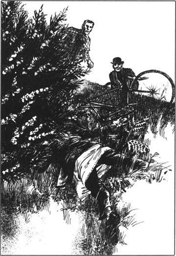
'Now,' said Holmes, 'before we go on, let's think carefully for a minute. What do we know so far? First, the boy left freely. He was dressed, he did not leave suddenly, he wanted to go—perhaps with someone, perhaps not. But the German teacher left without his socks and without his shirt, so he left very suddenly.'
'That's right,' I said.
'And why did Heidegger go? Because, from his bedroom window, he saw the boy. Because he wanted to follow him and bring him back. So far, so good. But why doesn't Heidegger just run after the boy? A man can easily run faster than a boy—but Heidegger doesn't do this. He gets his bicycle. He knows that he needs his bicycle. Why?'
'Ah,' I said, 'because the boy has a bicycle.'
'Not so fast, Watson. Think about it. Heidegger dies eight kilometres from the school. So the boy is moving very fast, because it is eight kilometres before a man on a bicycle can get near him. And Heidegger dies because someone hits him very hard on the head. A boy can't do that, so there was someone with the boy—a man, let's say. But we looked very carefully at the mud all round poor Heidegger's body, Watson, and what did we find? Some cow tracks, but nothing more. No footprints from people, no bicycle tracks.'
'Holmes,' I cried. 'This is not possible.'
'Very good, Watson,' he said. 'It's not possible, so something is wrong with my thinking. What can it be?'
'Perhaps,' I said, 'Heidegger broke his head in a fall?'
'In mud, Watson?'
'Oh, I don't know, I just don't know.'
'Come, come, Watson,' said Holmes. 'Every mystery has an answer. But for now, the Palmer tyre can tell us nothing more, so we must go back to the Dunlop tyre.'
We found the Dunlop track again and followed it north. Here there was very little mud, and we lost the track. Across the moor we could now see Holdernesse Hall, some kilometres to our left, and in front of us we could see the Chesterfield road. We walked down to the road, and along to the Green Man Inn.
dress v. put clothes on (sb. /oneself). 穿衣。
track n. line or series of marks left by a moving vehicle, person, animal, etc. （车辆、人、动物等行走时留下的）踪迹，足迹，痕迹。
centimetre n. one 100th part of a metre. 厘米。
mud n. soft wet earth. 泥土，淤泥。
tyre n. covering fitted round the rim of a wheel to absorb shocks, usu. of reinforced rubber filled with air or covering a pneumatic inner tube. 轮胎。
take sth. with sb. carry sth. （某人） 携带某物。
get up stand after sitting, kneeling etc. , rise. 站起。
follow v. (cause sth. to) come, go or take place after (sb. /sth.) (in place, time or order). 跟随。
bush n. low thickly-growing plant with several woody stems coming up from the root. 灌木。
browny adj. having the colour of toasted bread. 褐色的，棕色的。
read v. learn the significance of (sth.); interpret. 领会（某事物的）意义，解释。
body n. dead body; corpse or carcass. 死尸；遗体。
so far until now; up to this/that point of time. 迄今为止。
So far, so good. up to now everything has been successful. （谚语）到目前为止，一切都顺利。
run after sb. run to try to catch sb. 追赶某人。
round prep. having (sth.) as the central point of a circular movement. 围绕。
break v. (of a whole object) separate into two or more parts as a result of force or strain. 破，碎，断。
沼泽地里的尸体
4．沼泽地里的尸体
第二天一大早，我睁开眼睛，看到福尔摩斯站在我的床边。他已经穿戴整齐了。
“来，华生，”他叫道，“给你准备了热咖啡。10分钟后我们出发。”
6点钟时我们穿过了杂木林，半个小时后我们到了低峡谷沼泽。沼泽地的中间有一条小河，河畔的地面非常湿。
“我们能很容易地看到这湿地上的痕迹，”福尔摩斯说，“仔细看，华生！”
我们慢慢地穿过沼泽地，查看了每一寸泥土。我们发现了许多绵羊的蹄印，还有一些牛的蹄印——但是没有自行车的车辙。最后，我们发现了些什么。离小河不远的地方有自行车的车辙，恰好穿过一些肥沃的黑±。
“好啊！”我叫起来，“我们找到了。”
但是福尔摩斯没有显出高兴的样子。“这是自行车的车辙，没错，但不是那辆自行车。每一辆自行车的轮胎都各不相同——我能分辨42种不同的轮胎。这一种是邓禄普轮胎，但是海德格的车用的是帕默轮胎。这是英语老师告诉我的。所以骑这辆车的不是海德格。”
“那么是那男孩儿吗？”我问。
“可能不是，那男孩儿没有骑自行车。”福尔摩斯说。他又看了一眼泥土中的车辙。“这个车辙是从学校那边过来的。”
“或者也许是往学校方向去的？”我说。
“不，不，我亲爱的华生。看看这两道车辙，它们一样吗？”
“嗯，不一样，”我说，“其中一个轮胎的车辙印深一些。”
“那是后轮，”福尔摩斯说，“因为骑车的人当然是坐在后轮上。深一些的车辙是压在上面的那一道，因此这辆自行车走的是那条路，从学校那边过来穿过沼泽地一直骑下去。但是骑车的人是谁？他从哪里来？”
我们跟着邓禄普车胎的车辙往回走，回到了杂木林的附近。然后车辙就消失在一堆牛蹄印中，找不到了。福尔摩斯坐下来思考了几分钟。
“不，”他说着站了起来，“我们现在不要考虑这个问题。回到河边的淤泥那儿去，华生！”
两小时后福尔摩斯发出一声欢呼。我飞快地向他跑过去，看到淤泥中一条又长又窄的车辙。这正是帕默轮胎的车辙。
“这是海德格的！”福尔摩斯叫道，“我们跟着这个，华生。”
我们跟着帕默轮胎的车辙走了一公里或许更多，向北穿过沼泽地，车辙印不见了，然后又找到了，又不见了，又找到了。突然，车辙印断了。
“这里发生过什么？”我说，“他摔下来了？”
福尔摩斯仔细地看了看地面，然后他向开着黄花的小灌木丛走去。“看。”他平静地说。
有一朵黄花上面溅着红色的东西——深红褐色的血。
“糟糕！”福尔摩斯说，“糟糕！我从这里看出了什么？有什么东西或什么人击中了他。他倒下了，接着又站了起来，他又爬上自行车，然后骑走了。但是这里没有别的车辙了。有一些牛蹄印，但是没有脚印。我们必须跟着这血迹，华生。”
我们很快就找到了自行车，然后在灌木丛后面看到了一只鞋，又发现了一具尸体。那男人的头上和脸上都是血，已经死了。他穿着鞋，但是没有穿袜子，敞开的外衣里面套着睡衣。他就是那个德语老师。
“可怜的人，”福尔摩斯轻声说，“我们应该做些什么，华生？我们不能再浪费时间了，但是必须把这个可怜人的事告诉给谁。”
“要我跑回学校吗？”我说。
“不，我需要你跟着我。”福尔摩斯站起来，朝四周看了看。“看！”他说，“那边有个工人。他可以为我们去一趟学校。”
我去把那个工人叫了过来，福尔摩斯给赫克斯特伯博士写了一张便条。可怜的工人看了一眼尸体，便飞快地跑下小山，朝杂木林跑去。
“现在，”福尔摩斯说，“在继续工作之前，我们仔细考虑一下。到目前为止，我们都知道些什么？首先，孩子是自愿离开的。他穿戴整齐，不是突然出走。他愿意去——也许是和什么人一起，也许没有别人。但是德语老师没穿袜子和衬衫就走了，说明他是匆忙离开的。”
“没错。”我说。
“海德格为什么要走？因为透过他卧室的窗户，他看到了那个男孩儿。因为他想跟着他并把他带回学校。就这些，不错。但是为什么海德格没有追到男孩儿？成年人轻而易举地就能比孩子跑得快——但是海德格没有这么做。他骑了自行车，他知道他需要自行车。为什么？”
“啊，”我说，“因为那男孩儿有自行车。”
“不要这么快就下结论，华生。仔细想想。海德格死在离学校8公里外的地方，说明那男孩儿走得非常快，因为走出8公里以后，骑着自行车的成年人才赶上他。而且海德格死了是因为有人猛击他的头部。一个孩子是做不到这个的，因此说有人和男孩儿在一起——是一个男人，让我们姑且这么推测。但是我们仔细查看了可怜的海德格身边的泥土，华生，我们发现什么了？一些牛蹄印，但是此外就没有别的了。没有人的脚印，也没有自行车的车辙。”
“福尔摩斯，”我叫道，“这是不可能的。”
“很好，华生，”他说，“这不可能，因此我的想法有点儿问题。错在什么地方呢？”
“也许，”我说，“海德格摔下来的时候摔破了自己的脑袋？”
“在泥里摔破了脑袋，华生？”
“哦，我不知道，我真的不知道。”
“得啦，得啦，华生，”福尔摩斯说，“每个秘密都有它的答案。但是现在，帕默轮胎没能告诉我们更多的东西，因此我们必须回去找邓禄普轮胎。”
我们又找到了邓禄普轮胎的车辙，跟着它往北走。这里的泥不多，我们便看不到车辙了。现在我们能看到沼泽对面的霍尔德内斯府，在我们左边的几公里之外，在我们的前方，能看到切斯特菲尔德路。我们沿着那条路，朝林中人客栈走去。
5. A visit to the Green Man
5
A visit to the Green Man
When we were near the inn, Holmes suddenly cried out. 'Aaah! My foot! I can't stand on it. Help me, Watson.'
I took his arm, and we walked slowly to the door of the inn. A man stood there, smoking, and watching us.
'How are you, Mr Reuben Hayes?' said Holmes.
'Who are you, and how do you know my name?' said the man. He looked very unfriendly.
'Because it's on the door of the inn, over your head,' said Holmes. 'But can you help me, Mr Hayes?'
'No, I can't.'
'But I need help. I can't put my foot to the ground.'
'Well, don't put it to the ground.'
Holmes smiled. 'Look,' he said. 'It's very important, and I can offer you a pound for the use of a bicycle.'
'Where do you want to go?' asked Mr Hayes.
'To Holdernesse Hall.'
'Oh, friends of the Duke, are you?' Mr Hayes laughed, looking at our muddy shoes and trousers.
Holmes laughed too. 'Well, we are bringing him news of his lost son,' he said. 'The boy is in Liverpool.'
Mr Hayes's face went white, then red. 'Oh,' he said carefully. 'That's... er, that's good news. I worked for the Duke once, but he wasn't good to me. I don't like him, but I'm pleased about the boy.'
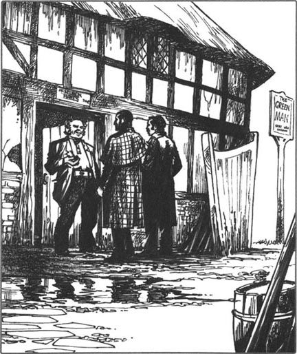
We all went into the inn. 'Now,' said Holmes, something to eat first, please. Then you can bring round the bicycle.'
'I haven't got a bicycle,' said Mr Hayes.
Holmes put a pound on the table.
'I tell you, man, that I haven't got a bicycle! You can have two horses to take you to the Hall.'
He brought us something to eat, and we ate hungrily. Through the window we could see the stables at the back of the inn. Once Holmes got up and walked round the room, then stood, looking out of the window at the stables. Surprisingly, his foot was now very much better.
Suddenly he laughed, and looked at me. 'I've got it!' he cried. 'Yes, of course that's it. Watson, did you see any cow tracks today?'
'Yes,' I said. 'Lots of them. Everywhere.'
'And how many cows did you see on the moor?'
'I don't remember any,' I said.
'Isn't that strange, Watson? Lots of cow tracks, but no cows? And do you remember those tracks, Watson?' He took out his notebook. 'There were tracks like this:
：：：：：：：：：：
and sometimes like this:
：．：．：．：．：．：．：．
and sometimes like this:
.·.·.·.·.·.·.·
Do you remember that, Watson?'
'No, I don't,' I said. 'What does it mean, Holmes?'
'It means that it's a very strange cow, Watson! Cows don't move like that. Now, let's go quietly out and have a look round these stables.'
There were two tired-looking horses in the stables. Holmes looked carefully at one of the horse's feet, and laughed. 'Look, Watson. Old shoes, but new nails. Oh, this case gets more interesting every minute.'
I began to ask Holmes a question, but suddenly we heard someone behind us, and there was Mr Reuben Hayes. His face was red and angry.
'What are you doing in my stables?' he cried.
'We're just looking at your horses, Mr Hayes,' said Holmes, smiling. 'Why? Are you afraid of something?'
The man opened his mouth, then closed it quickly. His face was still red and angry. Holmes did not give him time to speak.'
'I think your horses are tired, Mr Hayes. We can walk to the Hall. It's not far.'
'Three kilometres, by the road,' Mr Hayes said. His eyes still watched us angrily.
It was nearly dark when we left. We walked along the road for about a hundred metres. Then Holmes took my arm. 'Quick, Watson! Off the road and up the hill. Then we can come down the hill at the back of the inn.'
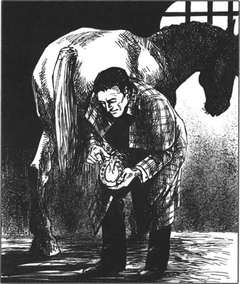
We ran up the hill. 'This man Hayes,' I said. 'He knows all about the kidnapping. Is that right, Holmes?'
'Of course it is,' he said. 'We can learn a lot more from Mr Hayes. Ah! Who's this? Watson, get down!'
There was a bicycle on the road. It came past us very quickly, and we saw the rider—Mr James Wilder, the Duke's secretary. His face was white and afraid.
'Quick, Watson!' said Holmes. 'We must watch him.'
We ran down the hill, and stopped when we could see the back door of the inn. Wilder's bicycle was by the wall near the door. For five minutes, nothing happened; then a man on a horse rode quickly out of the stables and disappeared down the road.
'What do you think of that, Watson?' said Holmes.
'Somebody's running away.'
'Yes. But not James Wilder, because there he is at the door.'
We could see Wilder in the light from the door. He stood there, looking out, and ten minutes later another man came down the road and went into the inn. Then a light came on in a room upstairs.
'Come, Watson. We must get nearer,' Holmes said.
We went down the hill and walked very quietly to the back door of the inn. The bicycle was still by the wall. Holmes looked at the wheel, and laughed quietly.
'A Dunlop tyre, Watson! Now, I must look through that upstairs window, so I need your back, Watson.'
Holmes stood on my back, but only for a second, and then he was down again. 'Come, my friend,' he said. 'It's a long walk to the school, so let's start at once. I can give you all the answers to this mystery tomorrow.'
It was a long, cold, muddy walk back to the school. I went to bed at once, but Holmes went out again, to Mackleton, I think. I was very tired, and slept all night like a dead man.
cry out (of people, animals, birds) make loud wordless sounds expressing fear, pain, etc. （人、野兽、禽鸟）大叫（表示恐惧、疼痛等）。
muddy adj. full of or covered in mud. 泥泞的。
stable n. building in which a horse or horses are kept and fed. 马厩。
lots of a large number or amount of. 许多。
tired-looking adj. looked tired. 看上去累的。
nail n. small thin piece of metal with a sharp point at one end and a (usu.) flat head at the other, hammered into articles to hold them together, or into a wall, etc. for use as a peg to hang things on. 钉子。
go to bed sleep or rest. 上床睡觉。
拜访林中人客栈
5．拜访林中人客栈
就在我们走近那家客栈时，福尔摩斯突然大叫起来。“啊！我的脚！我站不住了。帮帮我，华生。”
我扶着他的胳膊，慢慢地往客栈的门口走去。一个男人站在那里，一边抽烟一边看着我们。
“你好吗，鲁本·海斯先生？”福尔摩斯说。
“你是谁，你怎么知道我的名字？”那男人说。他看起来非常不友好。
“因为名字写在客栈的门上，就在你的头顶上方，”福尔摩斯说，“你能帮我个忙吗，海斯先生？”
“不，不能。”
“但是我需要帮助。我的脚不能着地了。”
“那就不要着地。”
福尔摩斯笑了。“你看，”他说，“这很重要，而且我可以付1英镑来借用你的自行车。”
“你想去什么地方？”海斯先生问。
“去霍尔德内斯府。”
“哦，公爵的朋友，是吗？”海斯先生看着我们满是泥浆的鞋和裤子大笑。
福尔摩斯也笑了。“啊，我们要带给他有关他失踪的儿子的消息，”他说，“那男孩儿在利物浦。”
海斯先生的脸色先是一阵苍白，接着变红了。“哦，”他小心翼翼地说，“那是……嗯，那是个好消息。我曾经为公爵工作过，但是他对我不好。我不喜欢他，可我喜欢那个孩子。”
我们都进了客栈。“现在，”福尔摩斯说，“请先来点吃的东西，然后把你的自行车拿来。”
“我没有自行车。”海斯先生说。
福尔摩斯在桌子上放了一英镑。
“我告诉你，伙计，我没有自行车！你可以找两匹马来带你们去那宅子。”
他给我们拿了些食物，我们狼吞虎咽地吃着。透过窗户我们可以看到客栈后面的马厩。有那么一次福尔摩斯站了起来，在房间里踱来踱去，然后站住，从窗户向外看着马厩。奇怪的是这时候他的脚好多了。
突然他笑了起来，看着我。“我得出答案了！”他叫道，“是的，当然是这样。华生，今天你看到牛蹄印了吗？”
“是的，”我说，“有许多，到处都是。”
“你在沼泽地里看到多少头牛？”
“我不记得看见过。”我说。
“这不是很奇怪吗，华生？有许多牛蹄印，却没有牛？你还记得那些蹄印吗，华生？”他拿出笔记本，“有些像这样：
：：：：：：：：：：
有时像这样：
：．：．：．：．：．：．：．
有时又像这样：
.·.·.·.·.·.·.·
你记得吗，华生？”
“不，记不得了，”我说，“这是什么意思呢，福尔摩斯？”
“这意味着它是一头非常奇怪的牛，华生！牛不会那样走路。现在，我们悄悄地出去看看那些马厩。”
马厩里有两匹看上去很疲惫的马。福尔摩斯仔细看了看其中一匹马的马蹄，笑了。“瞧，华生。蹄铁是旧的，但钉子是新的。哦，这个案子变得越来越有意思了。”
我正要问福尔摩斯一个问题，突然我们听到背后有人，是鲁本·海斯先生。他的脸涨得通红，怒气冲冲的。
“你们在我的马厩里干什么？”他大喊。
“我们只是看看你的马，海斯先生，”福尔摩斯微笑着说，“干吗这么激动？你在害怕什么吗？”
那人张开嘴，然后又立刻闭上了。他的脸依然涨红着，怒气冲冲的。福尔摩斯没有给他说话的时间。
“我觉得你的马累了，海斯先生。我们可以步行到那宅子去，路程不远。”
“沿大路走有3公里。”海斯先生说。他的眼睛依然看着我们，余怒未消。
我们离开的时候天都快黑了。我们沿着大路走了100米左右，然后福尔摩斯拉着我的胳膊。“快，华生！离开大路往山上爬，然后我们可以从山上下到那家客栈的后面。”
我们跑上了山。“这个海斯，”我说，“他对这起绑架知道得一清二楚，对吗，福尔摩斯？”
“当然是这样，”他说，“我们可以从海斯先生那里了解到更多的情况。啊！这是谁？华生，蹲下！”
路上有一辆自行车。它从我们身边飞驰而过，我们看清了骑车的人——詹姆斯·怀尔德先生，公爵的秘书。他的脸色苍白，一副惊恐的样子。
“快点儿，华生！”福尔摩斯说，“我们必须盯住他。”
我们跑下山，看见客栈后门的时候停了下来。怀尔德的自行车靠在门边的墙上。我们等了5分钟，什么也没发生；然后有个人骑着马从马厩里飞快地跑了出来，消失在路的尽头。
“对此你怎么看，华生？”福尔摩斯说。
“有人跑了。”
“是的。但那不是詹姆斯·怀尔德，因为他还在门边。”
借着从门里面透出来的灯光，我们可以看见怀尔德。他站在那儿，眼睛看着外边，10分钟后又有一个男人从路那边过来，进了客栈，然后楼上一个房间的灯亮了。
“来，华生。我们必须靠近些。”福尔摩斯说。
我们下了山，悄悄地走近客栈的后门。那辆自行车还靠在墙边。福尔摩斯看了看车轮，悄无声息地笑了。
“邓禄普车胎，华生！现在，我必须往楼上那扇窗户里面看。所以我需要用一下你的后背，华生。”
福尔摩斯站在我的背上，但是只过了一会儿功夫他就下来了。“走，我的朋友，”他说，“还要走好长一段路才能到学校，所以我们马上往回走吧。明天我就可以告诉你这个谜案的全部答案。”
回学校的路途漫长、寒冷又泥泞。我马上上床睡觉了，但是福尔摩斯又出去了，我想他是去麦克尔顿。我非常疲劳，整夜睡得像个死人一样。
6. Sherlock Holmes talks to the Duke
6
Sherlock Holmes talks to the Duke
At eleven o'clock the next morning Holmes and I were in the Duke's office at Holdernesse Hall. Mr Wilder came to speak to us.
'The Duke can see no one today,' he said to Holmes.
Holmes looked at him coldly. 'The Duke can see me,' he said. 'Please tell him that I am here.'
After half an hour the Duke of Holdernesse came into the room. He looked older—tired and ill.
'Well, Mr Holmes?' he said.
Holmes looked at James Wilder. 'I can speak more freely without your secretary here, sir.'
'Very well,' said the Duke tiredly. 'Please, James...'
James Wilder gave Holmes an angry look, but he went out of the room and shut the door.
Holmes looked at the Duke. 'You are offering, I hear, five thousand pounds for news of your son.'
'True.'
'And another thousand pounds for the name of the kidnapper.'
'True.'
My friend smiled. 'I see your cheque book on the table, sir. I would like to have your cheque for six thousand pounds.'
'Mr Sherlock Holmes,' the Duke said angrily, 'what is this about? Do you have news of my son, or not?'
'Oh, yes,'said Holmes.
The Duke's eyes never left Holmes's face. 'Where is my son?' he said quietly.
'He is—or was last night—at the Green Man Inn, three kilometres along the road to Chesterfield.'
The Duke fell back in his chair.
'And the name of the kidnapper?'
Sherlock Holmes's answer was a very surprising one. 'You,' he said. 'And now, sir, your cheque, please.'
The Duke stood up, his face white and angry. Then he sat down again, and put his face in his hands. It was some minutes before he spoke.
'How much do you know?' he asked.
'I saw you with him last night,' said Holmes.
'And how many people know about this?'
'Only I and my friend here, Dr Watson.'
The Duke took out a pen, opened his cheque book, and began to write. 'When I made this offer, I didn't know...' He stopped, then began again. 'Are you and your friend going to talk about this, Mr Holmes?'
'I don't understand you, sir,' said Holmes.
'I mean...Nobody needs to know about this—this little family mystery. Just you and your friend Watson. Look, here is my cheque for twelve thousand pounds.'
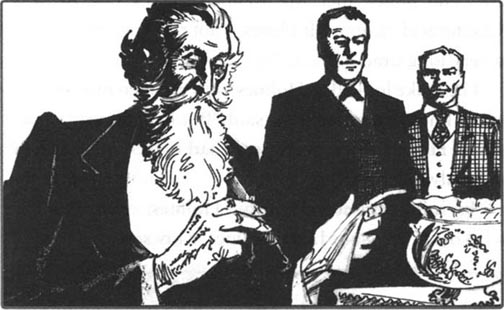
Holmes gave him a cold little smile. 'I'm sorry, sir. There is a dead man in this case. You remember?'
'But that wasn't James!' cried the Duke. 'He knew nothing about it. He was very, very unhappy when he heard about the—the killing.'
'Murder,' said Holmes.
'But James wasn't there! And when he heard about it, he came to me at once, and told me everything. Oh, Mr Holmes, you must help him—you must! He is not the murderer! The murderer ran away last night.'
Holmes smiled again. 'I have a little more news for you, sir. The police met Mr Reuben Hayes last night at Chesterfield station. Mr Hayes is not running anywhere for a very long time.'
The Duke looked at Holmes with an open mouth. 'You—you know everything!' he said. 'But I am pleased to hear about Hayes—he was always a bad man. And that news can only help James.'
'James? Your secretary?' said Holmes.
'No, sir. My son. James Wilder is my son.'
coldly adv. in an unfriendly way. 不友好地，冷淡地。
shut v. move (a door, lid, window, etc.) into a position where it blocks an opening. 关上（门、盖子、窗户等）。
cheque n. order to a bank to pay a sum of money from one's account to another person. 支票。
murderer n. person guilty of murder. 凶手。
run away suddenly leave a place; escape from a place. 逃跑，逃走。
歇洛克·福尔摩斯和公爵的谈话
6．歇洛克·福尔摩斯和公爵的谈话
第二天上午11点钟，福尔摩斯和我到了霍尔德内斯府公爵的办公室。怀尔德先生过来接待我们。
“公爵今天不能会客。”他对福尔摩斯说。
福尔摩斯冷冷地看着他。“公爵可以见我，”他说，“请告诉他我在这里。”
半小时之后霍尔德内斯公爵走进房间。他看起来苍老了——疲惫不堪而且一副病容。
“哟，福尔摩斯先生？”他说。
福尔摩斯看着詹姆斯·怀尔德。“您的秘书不在场的话，我说话会更方便一些，先生。”
“很好，”公爵疲惫地说。“詹姆斯，请……”
詹姆斯愠怒地瞪了福尔摩斯一眼，但他还是离开了房间，并随手关上了门。
福尔摩斯看着公爵。“听说您悬赏5,000英镑获取您儿子的消息。”
“确有此事。”
“另外还悬赏1,000英镑获得绑架者的名字。”
“没错。”
我的朋友笑了笑。“我看到桌子上放着您的支票本，先生。我想向您索要一张6,000英镑的支票。”
“歇洛克·福尔摩斯先生，”公爵生气地说，“这话是什么意思？你有没有我儿子的消息？”
“哦，有。”福尔摩斯说。
公爵目不转睛地盯着福尔摩斯的脸。“我儿子在哪里？”他平静地说。
“他现在——或者昨天晚上——在林中人客栈，沿着大路往切斯特菲尔德方向走三公里的地方。”
公爵颓然地靠在了椅子上。
“绑架者的名字呢？”
歇洛克·福尔摩斯的回答出人意料。“您，”他说，“现在，先生，请给我支票。”
公爵站起身，他的脸色苍白而又愤怒。然后他又坐了下去，用手捂着脸，足足过了几分钟才开口。
“你知道多少？”他问。
“昨天晚上我看到您和他在一起。”福尔摩斯说。
“现在有几个人知道此事？”
“只有我和我的这位朋友，华生医生。”
公爵拿出一枝钢笔，打开他的支票本，开始写。“当初我悬赏时，我不知道……”他停顿了一会儿，又接着说，“你和你的朋友会把这件事说出去吗，福尔摩斯先生？”
“我不明白您的意思，先生。”福尔摩斯说。
“我的意思是……不需要让任何人知道这件事——这是家庭小秘密，只有你和你的朋友华生知道就行。看，这是12,000英镑的支票。”
福尔摩斯微微冷笑着。“对不起，先生。这个案子里面牵涉到一个死人。您记得吗？”
“但那不是詹姆斯干的！”公爵大声说，“他对此事一无所知。当他听说这——这起杀人案时，他非常非常难过。”
“是谋杀。”福尔摩斯说。
“但是当时詹姆斯不在场！当他听说此事时，就立刻来见我，把一切都告诉了我。哦，福尔摩斯先生，你必须帮助他——你必须！他不是杀人凶手！凶手昨天晚上逃跑了。”
福尔摩斯又笑了。“我还有一个消息告诉您，先生。昨天晚上警察在切斯特菲尔德火车站遇到了鲁本·海斯先生。海斯先生很长一段时间内哪儿也去不了了。”
公爵瞠目结舌地看着福尔摩斯。“你——你什么都知道！”他说，“但是我很高兴听到海斯的消息——他向来是个坏家伙，这个消息只会对詹姆斯有利。”
“詹姆斯？您的秘书？”福尔摩斯说。
“不，先生。我的儿子。詹姆斯·怀尔德是我儿子。”
7. The Duke's son
7
The Duke's son
When the Duke said this, I was very surprised, but Holmes was surprised too.
'This is news to me,' he said. 'Can you tell me more?'
The Duke stood up, and walked round the room for a minute. 'I must tell you everything,' he said. 'I didn't want to talk about it, but I must. I see that now.'
He sat down again, and began his story. 'When I was a young man, Mr Holmes, I was in love—oh, so much in love. It only happens to you once, and this woman was the love of my life. I wanted her to be my wife—but she died. She left me this one child, and I loved him because of her. When I look in his face, I see her, and remember her, and can't stop loving her. I must have the boy near me because of this. But a government minister cannot tell the world about a love-child like this. So, to the world, James is my young secretary, not my son.
'He knows that I am his father. He hates the Duchess, because she is not his mother. And he hates my younger son, Arthur, because Arthur has everything. Arthur has a name, a famous father, houses, money, everything. James has nothing. Well, he has some money, of course, but he is just Mr James Wilder, and he wants to be the Duke of Holdernesse one day. That's not possible, of course, but James can't understand that. And so, you see, I was afraid for Arthur, and that's why I sent him to Dr Huxtable's school.
'And what does James do next? He kidnaps my poor Arthur. It changes nothing, but James can't see that. He wants me to say, "Yes, James, now you can be my first son; you can have everything. Arthur can be the number two son." But I can't do that, of course I can't.
'James knew this man Hayes, you see, because Hayes worked for me once. James asked for Hayes's help, and the man was happy to do it. You remember my letter to Arthur on that last day? Well, James opened the letter and put in a note from him. That evening he cycled across the moor and met Arthur in Ragged Shaw. He talked about the Duchess, Arthur's mother. "She wants to see you," he told Arthur. "She's waiting on the moor. Come back at midnight, and a man with a horse can take you to her." Of course, poor Arthur wanted to see his mother, so he came. Hayes was there with two horses, and they rode across the moor. But the German teacher followed them, and Hayes killed him. Hayes then took Arthur to the Green Man.
'Well, Mr Holmes, I knew nothing about any of this until the murder. James is a bad boy, but he does not murder people. When he heard the news, he came to me at once, crying. What could I do? I didn't want the world to know about this. So James went down to the Green Man. He told Hayes to run away, because everybody knew about the murder now—and knew the murderer's name too. Hayes left at once. Later, I went down and saw Arthur. I left him there with Mrs Hayes because I couldn't say anything to the police just then.
'So, Mr Holmes, now you know everything.'
'Mmm,' said Holmes. 'You help a murderer, you say nothing to the police, you leave your young son in a dirty inn...and you ask for my help.'
People never spoke to the Duke of Holdernesse like this usually. His face was red, but he said nothing.
'First,' said Holmes, 'we must bring Arthur home.'
'Yes,' the Duke said quietly.
Holmes quickly wrote a note and took it out of the room. A minute later, he was back. 'Now, what are you going to do about Mr James Wilder?' he said.
'I understand you, Mr Holmes,' said the Duke. 'James is leaving me and going to Australia next week.'
'Good,' said Holmes. 'And the Duchess? Perhaps without James in the house, you and she...'
'Yes. I wrote to the Duchess this morning.'
Holmes stood up. 'Well,' he said, 'Watson and I can go home now, I think. There is just one other small thing... This man Hayes took two horses across the moor, but the horses' feet made the tracks of a cow in the mud. How was this possible?'
The Duke looked surprised and thought for a minute. Then he went away and came back two minutes later with a glass box in his hands. In the box were some horse-shoes.
'We found these shoes under the ground in the garden,' the Duke said. 'They are about five hundred years old, we think. The Holdernesse family has a long and interesting past.'
Holmes opened the box and took out one shoe. It was a shoe for a horse's foot, but it looked like a cloven cow's foot. Holmes wet his finger and ran it round the bottom of the shoe. A little mud came off on his finger.
'Thank you,' said Holmes. He put the horse-shoe back in its box. 'That shoe is the second most interesting thing in the north of England,' he said.
'And the first?' asked the Duke.
Holmes took the cheque for twelve thousand pounds from the table, and slowly put it into his notebook, 'I am a poor man,' he said. He looked lovingly at the notebook, then put it carefully in his pocket.
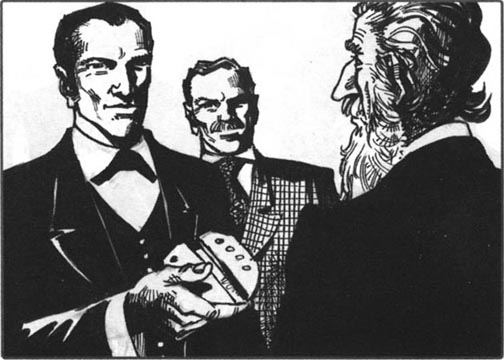
die v. stop living; come to the end of one's life. 死，死亡。
hate v. feel hatred towards. 憎恨。
change v. cause sth. to become different; alter. 改变。
be happy to do sth. pleased to do sth. 乐于做某事。
dirty adj. not clean; covered with dirt. 脏的，污秽的。
cloven adj. (of the foot of a cow, sheep, etc.) divided in two parts. 偶蹄的。
公爵的儿子
7．公爵的儿子
公爵的话让我大吃一惊，甚至连福尔摩斯也感到很意外。
“这对我来说可是个新闻，”他说，“您能告诉我更多的情况吗？”
公爵站起来，在房间里转了一会儿。“我必须把一切都告诉你们，”他说，“我不想说起这件事，但是现在我知道我必须说了。”
他又坐了下来，开始讲述自己的故事。“当我还是一个年轻小伙子的时候，福尔摩斯先生，我坠入了情网——哦，很痴迷。这种感情一个人只能迸发一次，这个女人是我一生的爱。我想娶她为妻——但是她撒手人寰了。她给我留下了这个孩子，我因为爱她而爱这个孩子。当我看着他的脸的时候，我就看到她，想起她，情不自禁地爱她。因为这个原因我必须让这个孩子跟在我身边。但是作为内阁部长，我不能让外界知道这个私生子的存在。因此，对外界来说，詹姆斯是我年轻的秘书，而不是我的儿子。
“他知道我是他父亲。他恨公爵夫人，因为她不是他的母亲。他也恨我的小儿子阿瑟，因为阿瑟拥有一切。阿瑟有姓氏、有一位声名显赫的父亲、有房产、有金钱，拥有一切，而詹姆斯却一无所有。当然，他有一些钱，但是他只能是詹姆斯·怀尔德先生，而他想有朝一日成为霍尔德内斯公爵。那当然是不可能的，可是詹姆斯无法理解这些。所以，你看，我为阿瑟担心，这就是我送他去赫克斯特伯博士的学校上学的原因。
“詹姆斯后来又做了什么？他绑架了我可怜的阿瑟。这并不能改变事实，但是詹姆斯不理解这一点。他想让我说：‘是的，詹姆斯，现在你是我的大儿子；你可以拥有一切。阿瑟是我的二儿子。’但是我不能这么做，我当然不能这么做。
“詹姆斯认识海斯，你知道，因为海斯曾经为我工作过。詹姆斯请求海斯的帮助，那个男人非常高兴做这事。你记得出事的前一天我写给阿瑟的信吗？嗯，詹姆斯拆开了那封信，放入自己写的一张便条。那天晚上他骑自行车穿过沼泽地，在杂木林见了阿瑟。他说起公爵夫人，也就是阿瑟的母亲。‘她想见你，’他告诉阿瑟，‘她在沼泽地等你。午夜之后过来，有一个骑马的人会带你去见她。’可怜的阿瑟当然想见母亲，所以他就去了。海斯牵着两匹马去了那里，他们骑马穿过沼泽地。但是德语老师跟着他们，海斯杀了他。然后海斯带着阿瑟去了林中人客栈。
“哦，福尔摩斯先生，我对此一无所知——直到凶杀案发生之后我才获悉。詹姆斯是个坏孩子，但是他没有杀人。当他听到这个消息时，立刻哭着来见我。我能怎么办呢？我不想让外界知道这件事。所以詹姆斯去了林中人客栈。他让海斯逃跑，因为现在每个人都知道凶杀案了——也知道凶手的名字。海斯马上逃走了。后来，我去见阿瑟。因为当时我什么也不能对警察说，所以我就把他留在那儿，和海斯夫人待在一起。
“因此，福尔摩斯先生，现在你全都知道了。”
“嗯，”福尔摩斯说，“您帮助一个凶手，您什么也没有告诉警察，您把您的小儿子丢在脏兮兮的客栈……您还请求我帮忙。”
从来没有人这么跟霍尔德内斯公爵说过话。他的脸红了，但是一言不发。
“首先，”福尔摩斯说，“我们必须带阿瑟回家。”
“是的。”公爵轻声说。
福尔摩斯飞快地写了一张便条并拿着它走出了房间。一分钟之后，他回来了。“现在，您打算怎么处置詹姆斯·怀尔德先生？”他说。
“我理解你的意思，福尔摩斯先生，”公爵说，“詹姆斯准备下星期离开我去澳大利亚。”
“好，”福尔摩斯说，“公爵夫人呢？也许没有詹姆斯在这个家里，您和她……”
“是的。今天早上我写信给公爵夫人了。”
福尔摩斯站了起来。“好，”他说，“我觉得华生和我现在可以回家了。不过还有一件小事情……这个海斯牵着两匹马穿过沼泽地，但是那马蹄在泥地里留下了牛的蹄印。这怎么可能呢？”
公爵看上去很意外，他思索了一会，然后走了出去，两分钟后他回来了，手里拿着一个玻璃盒。盒里有几个马蹄铁。
“我们在花园的地里发现了这些马蹄铁，”公爵说，“我们觉得它们大概有500年的历史了。霍尔德内斯家族的历史漫长而有趣。”
福尔摩斯打开盒子，拿出一只马蹄铁。它是用来钉在马蹄上的，但看上去像是一只牛的偶蹄。福尔摩斯把手指弄湿，顺着马蹄铁底部绕了一圈。他的手指沾上了一点泥。
“谢谢。”福尔摩斯说。他把马蹄铁放回盒子里。“这马蹄铁是英国北部第二有趣的东西。”他说。
“那最有趣的是什么呢？”公爵问。
福尔摩斯从桌子上拿起12,000英镑的支票，慢慢地把它夹在自己的笔记本里。“我是个穷人。”他说。他满心欢喜地看着笔记本，然后小心翼翼地把它装进口袋。
ACTIVITIES: Before Reading
ACTIVITIES
Before Reading
1. Read the introduction of the book. How much do you know now about the story? Tick one box for each sentence.
1) Someone kidnaps the Duke of Holdernesse.
YES □／NO □
2) The Duke's son goes to Dr Huxtable's school.
YES □／NO □
3) Dr Huxtable asks Sherlock Holmes for help.
YES □／NO □
4) Holmes and Watson look for tracks in mud.
YES □／NO □
5) Holmes and Watson find many bicycle tyres on the moor.
YES □／NO □
6) All bicycle tyres are the same.
YES □／NO □
7) Holmes and Watson find a dead body.
YES □／NO □
2. Some of these things and people are important for finding the answer to the mystery. Can you guess which? Tick eight of these fifteen boxes.
| □cow tracks | □mud | □the English teacher |
| □sheep tracks | □water | □the German teacher |
| □bicycles | □a hat | □the Duke's secretary |
| □horses | □a coat | □the Duke's wife |
| □trains | □shoes | □the Duke's daughter |
ACTIVITIES: While Reading
ACTIVITIES
While Reading
1. Read Chapters 1, 2 and 3. How much do we know now about the mystery? Which of these sentences are true, and which are possibly true (but we don't really know yet)?
1) The Duke's son, Arthur, disappeared on 13th May.
2) Someone kidnapped Arthur.
3) The German teacher disappeared the same night.
4) Heidegger took his bicycle with him.
5) Arthur left the school with Heidegger.
6) Arthur ran away because of his father's letter.
7) Arthur liked his mother better than his father.
8) The Duchess knew nothing about Arthur disappearing.
9) James Wilder posted the Duke's letter to Arthur.
10) Arthur and Heidegger did not leave by road.
11) Heidegger rode his bicycle across the moor.
12) Arthur went north, through Ragged Shaw, to the moor.
2. Before you read Chapter 4 (The body on the moor), can you guess what happens? Choose one answer each time.
1) Holmes and Watson find a body. Who is it?
(a) Arthur
(b) Heidegger
(c) another person
2) What do they find near the body?
(a) the Duke's letter
(b) footprints
(c) a bicycle
3. Read Chapters 4 and 5, and read these questions. We know some of the answers now, but not all of them. Answer the questions when you can, and write 'Don't know yet' for the others.
1) Who rode a bicycle with Palmer tyres?
2) Whose body did Holmes and Watson find?
3) How did this person die?
4) Who killed him?
5) Did Heidegger leave the school suddenly? How do we know?
6) How did Arthur travel across the moor?
7) Why did Holmes ask Reuben Hayes for a bicycle?
8) What was interesting about the cow tracks?
9) What did Reuben Hayes know about the kidnapping?
10) Who rode the bicycle with Dunlop tyres?
11) Why did Holmes go out again that night, to Mackleton?
4. Before you read Chapter 6, can you guess the answers to these questions? Choose answers from these names.
James Wilder / Dr Huxtable / the Duke / Reuben Hayes / the English teacher / Arthur
1) Who rode away from the Green Man Inn on a horse?
2) Who came down the road and went into the inn?
3) Who did Sherlock Holmes see in the upstairs room of the inn?
5. Read Chapter 6, and answer these questions.
1) Who did Holmes say was the kidnapper?
2) Why do you think the Duke wrote a cheque for twelve thousand pounds, not six thousand pounds?
3) Who killed Heidegger?
4) Why did the police go to Chesterfield station?
5) What surprising thing do we learn about the Duke's family?
6. How does the story end? Before you read Chapter 7, look at these sentences. Can you guess how many are true? Choose as many as you like.
1) Arthur's mother was not James Wilder's mother.
2) The Duke kidnapped Arthur because he did not want the Duchess to take Arthur to France.
3) The Duchess kidnapped Arthur.
4) James Wilder hates his brother.
5) Arthur goes to live in France with his mother.
6) James Wilder goes to Australia.
7) James Wilder goes to prison.
8) The Duke loses his job as a government minister.
9) The Duke explains the mystery of the cow tracks.
10) Sherlock Holmes tells the police everything.
11) Sherlock Holmes gives the cheque for twelve thousand pounds back to the Duke.
ACTIVITIES: After Reading
ACTIVITIES
After Reading
1. Match the names with the sentences. Then use the sentences to write about the people. Use pronouns (he, him) and linking words (and, but, so, because) where possible.
the Duke / Arthur / James Wilder / Reuben Hayes / Heidegger
Example: Arthur was the Duke's younger son. He met Reuben Hayes in Ragged Shaw one night because he...
l) Arthur was the Duke's younger son.
2) ______ taught German at Dr Huxtable's school.
3) ______ did not want people to know about his love-child.
4) ______ worked for the Duke once.
5) ______ knew that the Duke was his father.
6) ______ saw Arthur from his bedroom window.
7) ______ hated Arthur.
8) Arthur met Reuben Hayes in Ragged Shaw one night.
9) ______ did not like the Duke.
10) ______ wanted to have James near him.
11) ______ was happy to help with the kidnapping.
12) ______ wanted to see his mother.
13) ______ wanted to be the Duke's number one son.
14) ______ gave James a job as his secretary.
15) ______ got his bicycle and followed Arthur to the moor.
2. Here is a new illustration for the story. Find the best place in the story to put the picture, and answer these questions.
The picture goes in Chapter ______.
1) Where are Holmes and Watson?
2) Why is Holmes standing on Watson's back?
3) Who are the three people in the upstairs room?
Now write a caption for the illustration.
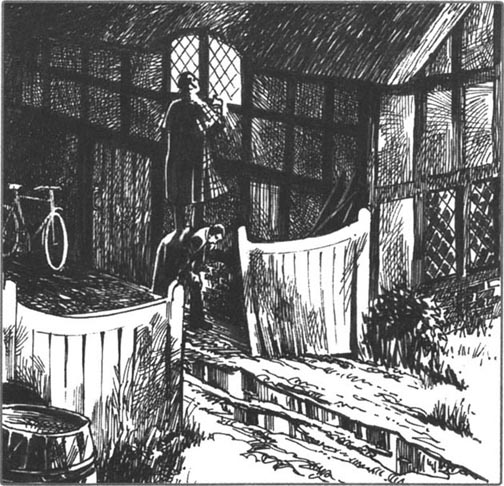
Caption: _____________________________________________.
3. What did James Wilder say to the Duke? Put their conversation in the right order, and write in the speakers' names. James Wilder speaks first (number 7).
1) ______ 'Yes, I do. It—it was Reuben Hayes.'
2) ______ 'But you can't be my first son—you know that.'
3) ______ 'No, it wasn't. Someone...killed him.'
4) ______ 'Helped you kidnap Arthur? You mean, you kidnapped Arthur? Why? In God's name, why?'
5) ______ 'But why not? Why can't I have your name and call you "father"?'
6) ______ 'Dead! But what happened? Was it an accident?'
7) ______ 'Oh sir, they found the German teacher on the moor—he's dead ! What shall I do? Please help me!'
8) ______ 'How do you know it was Hayes?'
9) ______ 'Because I hate him. I'm your first son, not him!'
10) ______ 'Because I wasn't married to your mother! This is the end, James. You must go away—for ever.'
11) ______ 'Because Hayes helped me kidnap Arthur. The German teacher saw them, and Hayes killed him.'
12) ______ 'Who? Do you know, James?'
4. What does Holmes tell Dr Huxtable? Use these words (one for each gap) to complete the passage.
Australia, cheque, gave, happy, help, home, horse-shoes, kidnapped, kill, learnt, money, murdered, police, secretary, told, unhappy
'Well, Dr Huxtable, the story has a ______ ending for Arthur. He is now back at ______, the ______ have Reuben Hayes, and the Duke's ______ is going to ______. James Wilder wanted______ from the Duke, you see, so he ______ Arthur, with the ______ of Reuben Hayes. But Wilder did not want to ______ any one, and when Hayes ______ poor Heidegger, Wilder was very ______ and ______ the Duke everything. So there we are. I ______something very interesting about ______, and the Duke ______ me a large ______.'
What did Holmes not tell Dr Huxtable? Why not? And what did Holmes say that was not really true?
5. Why did Sherlock Holmes take the Duke's cheque? How many of these answers do you think are good ones? Choose as many as you like.
1) Sherlock Holmes liked money and wanted more of it.
2) He worked hard to find the answer to the mystery, so it was right for him to take the money.
3) He wanted Dr Watson to have half the money.
4) He didn't want the money, but he wanted to punish the Duke in some way.
5) He wanted to give the money to Heidegger's family in Germany.
6) He wanted to take the cheque, and then give it back to the Duke later, when James Wilder was in Australia.
封底
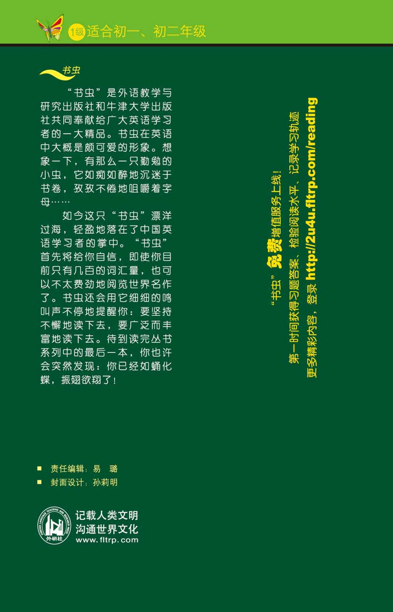